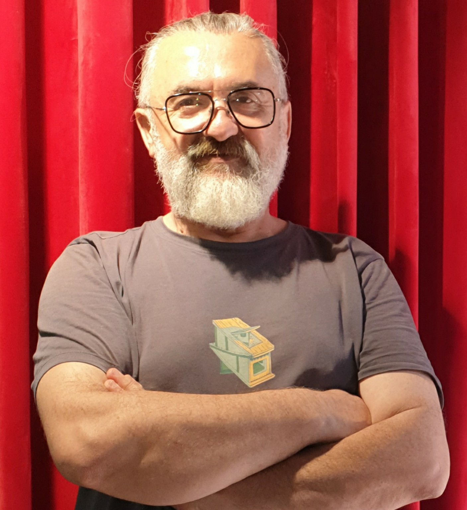

Toplumu anlamak, nedenlerini sorgulamak

Adem Afşar; sosyoloji, arkeoloji, tarih ve uluslararası dış ticaret ve lojistik yönetimi alanlarında lisans eğitimlerini tamamlamıştır. Sosyoloji alanında yüksek lisans eğitimini tez aşamasına kadar sürdürmüştür.
Toplumların tarihsel gelişimi, siyasal iktidarın oluşumu, birey ile toplum arasındaki ilişkiler, toplumsal sorumluluk ve birlikte yaşamanın koşulları üzerine araştırma ve yazı çalışmalarını sürdürmektedir.
Çalışmalarında tarihsel olayları yalnızca sonuçlarıyla değil, bu sonuçları ortaya çıkaran toplumsal koşullar, kurumsal yapılar ve insan davranışlarıyla birlikte değerlendirmeyi esas almaktadır.
Yayımlanmamış araştırma ve düşünce çalışmaları; göç ve mülteci politikaları, bu politikaları belirleyen irade ile uygulayıcı kurumlar arasındaki uyum, insan hakları ve kamu güvenliği ilişkisi, dışa görece kapalı yerleşimlerde toplumsal güç ilişkileri, kuşaklar arası cinsiyet algıları ve siyasal istikrar karşısında toplumsal beklentiler gibi konuları kapsamaktadır.
Ayrıntılı yazar biyografisiKitap çalışmaları
Toplumun kuruluşundan siyasal iktidarın işleyişine, tarihsel düşünürlerden çağdaş toplumsal sorunlara uzanan çalışmalar.
İbn-i Haldun'u Anlamak
Toplum, dayanışma ve medeniyet üzerine bir inceleme
Toplumların kuruluşu, asabiyet, dayanışma, üretim ve siyasal düzenin oluşumu üzerine tarihsel ve sosyolojik bir inceleme.
Kitap tamamlanmıştır. Yayın bilgileri kesinleştiğinde duyurulacaktır.
Seçilmiş okumaİbn-i Haldun ve Machiavelli
Toplumu Kuran Güç ile İktidarı Koruyan Akıl
İki düşünürün toplum, iktidar ve siyasal gerçekçilik anlayışlarını karşılaştıran; benzerlikleri, ayrılıkları ve olası düşünsel etkileşim sorusunu inceleyen çalışma.
Yayın tarihi henüz kesinleşmemiştir.
Düşünce dünyası
Kavramları yalnızca açıklamakla yetinmek yerine, tarihsel ve toplumsal örnekler üzerinden değerlendirmeyi amaçlıyorum.
Altı kavramsal incelemenin ilk sürümleri yayımlanmıştır. Her çalışma bağımsız olarak okunabilir; aynı zamanda birey, toplum, tarih ve siyasal iktidar arasındaki ilişkileri birlikte ele alır.
Bu bölümde yer alan metinler, geliştirilmekte olan kavramsal incelemelerin ilk sürümleridir. Yazarın özgün düşünsel önermeleri, tarihsel düşünürlerin görüşlerinden ayrı biçimde ele alınmaktadır.
Sonraki sürümlerde akademik kaynaklandırma, doğrulanmış metin içi atıflar, sayfa numaraları, karşıt kuramsal yaklaşımlar ve tarihsel karşılaştırmalar genişletilecektir.
Makaleler ve denemeler
Yayımlanan yazılarımı ve geliştirmekte olduğum araştırma konularını burada bulabilirsiniz. Başlığa veya konuya göre arama yapabilir, yayımlanma durumuna göre listeyi süzebilirsiniz.
7 kayıt gösteriliyor.
Yapay Zekâ Rekabetinden Düşünsel Sinerjiye
İnsan–Yapay Zekâ İlişkisinde Üretim Kapasitesinin Genişlemesi
Yapay zekâ rekabetini, insanın düşünme ve üretme kapasitesine kazandırdığı imkânlar üzerinden değerlendiren bir inceleme.
Makale · 30 Ekim 2026Makaleyi oku
İnsan, Toplum ve Sorumluluk
Bireysel ihtiyaçlar ile ortak yaşamın gerekleri arasındaki ilişki.
Çalışma konusuİrade ve Gerçek Özgürlük
Karar verme kapasitesi, çevrenin etkisi ve bireyin kendi davranışlarını değerlendirmesi.
Çalışma konusuGöç Politikaları ve Toplumsal Güvenlik
Göç politikalarının belirlenmesi ve uygulanması, bireysel mağduriyetlerin korunması, kamu güvenliği ve kurumsal sorumluluk ilişkileri.
Yayımlanmamış araştırma konusuToplumsal İlişkiler ve Görünmeyen Suistimaller
Küçük ve dışa görece kapalı yerleşimlerde güç ilişkilerinin olası suistimallerin görünürlüğüne etkileri.
Yayımlanmamış araştırma konusuKuşaklar Arasında Cinsiyet Algısı
Cinsiyet kavramına yüklenen anlamların, toplumsal rollerin ve beklentilerin değişimi.
Yayımlanmamış araştırma konusuSiyasal İstikrar ve Toplumsal Memnuniyetsizlik
Uzun süreli yönetimlerde kamusal hizmetler, hak ve yükümlülükler, beklentiler ve siyasal eleştirinin gerekçeleri.
Yayımlanmamış araştırma konusuAramanızla eşleşen kayıt bulunamadı. Başka bir sözcük deneyebilirsiniz.
İletişim
Kitap çalışmaları, makaleler ve düşünsel konular hakkında iletişim kurmak veya görüş paylaşmak için aşağıdaki e-posta adresini kullanabilirsiniz.
Diğer platformlardaki yazılarım ve profilim
Yazılarımı ve düşünsel çalışmalarımı farklı platformlarda da takip edebilirsiniz.
Eserlerin kullanımı ve yayın izinleri
Bu sitede yayımlanan makale, deneme ve diğer özgün metinlerin eser sahipliği Adem Afşar'a aittir. İçeriklerin çevrim içi erişime açık olması, bunların serbestçe yeniden yayımlanabileceği veya ticari amaçla kullanılabileceği anlamına gelmez.
Bilimsel, eleştirel ve haber verme amaçlı alıntılar, ilgili mevzuatın izin verdiği sınırlar içinde ve eser ile yazar adı açıkça belirtilerek yapılabilir. Bir yazının tamamının veya önemli bir bölümünün başka bir yerde yayımlanması; çoğaltılması, çevrilmesi, uyarlanması, derlenmesi ya da ticari kullanımı için, kanuni istisnalar saklı kalmak üzere, önceden yazılı izin alınmalıdır.
Yayınevleri, akademisyenler, araştırmacılar, eğitim ve kültür kurumları, basın kuruluşları ve diğer ilgililer; basılı veya dijital yayın, ders/etkinlik kullanımı, çeviri, yeniden basım ve diğer lisans talepleri için e-posta yoluyla başvurabilir.
İzin değerlendirmesinde kullanım amacı, kullanılacak bölüm, mecra, basım/adet veya erişim kapsamı, ülke, süre, ücret ve münhasırlık durumu ayrıca kararlaştırılır. Yazılı onay verilmedikçe izin verilmiş sayılmaz.
© 2026 Adem Afşar. Tüm hakları saklıdır. Bu bildirim, yürürlükteki yasal alıntı ve kullanım istisnalarını ortadan kaldırmaz.